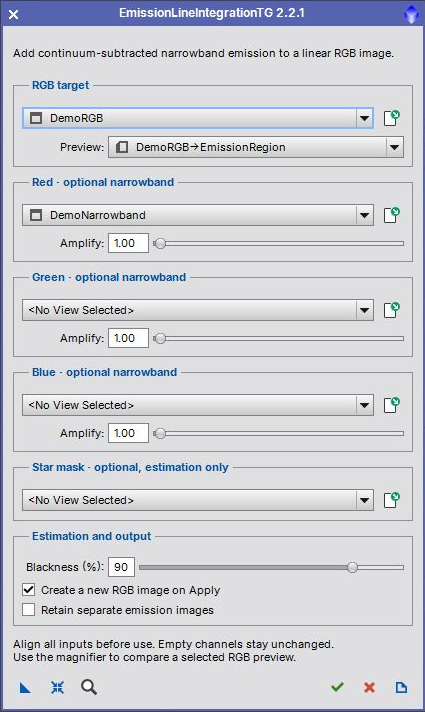

Version 2.2.1. Add continuum-subtracted narrowband emission to selected channels of a linear RGB image. [more]
Keywords: narrowband, RGB, emission, continuum subtraction
[hide]
[hide]
EmissionLineIntegrationTG estimates the continuum contribution in a narrowband exposure, subtracts it, and adds the remaining emission to an RGB channel. Assign a grayscale narrowband image to at least one of Red, Green or Blue; unused channels remain unchanged. The same narrowband input can be assigned to multiple channels.

The dialog opens without an image. Use the image selectors or the Open Image symbol beside each selector to open an image file later. All inputs must have identical pixel dimensions and be registered. Matching dimensions alone do not establish registration. Use linear, background-corrected data.
[hide]
[hide]
For each assigned channel, a temporary copy of that RGB channel is scaled to match the mean of its narrowband image. The continuum estimator samples increasing subtraction factors and finds the peak in the derivative of the black-pixel curve.
The emission image is narrowband minus the estimated continuum scale times the mean-matched broadband channel, clipped to the range 0–1. The output channel is its original value plus Amplify times that emission image, also clipped to 0–1. No automatic rescaling is applied. Strong amplification can therefore clip highlights.
The Process Console reports the estimated continuum scales. These scales refer to the mean-matched broadband data; they are not calibrated physical flux measurements. Results depend on the filters, background treatment and image registration.
[hide]
RGB target and Preview
Select the full RGB image. The optional preview determines only the displayed before/after region, not the pixels used for continuum fitting.
Red, Green and Blue narrowband inputs
Each optional grayscale image supplies emission to its named channel. Select no view to leave that channel unchanged.
Amplify
Emission multiplier from 0 to 100, default 1.00. A value of zero adds no emission; the selected input is still evaluated.
Star mask
Optional registered grayscale mask. Pixels above its mean are excluded from continuum estimation only. It does not mask the final addition. Existing masks attached to input windows are not applied.
Blackness
Stop sampling at this black-pixel percentage, default 90. Increase it if the derivative peak is too close to the end of the sampled curve. Invalid or degenerate estimates produce an error instead of an incomplete RGB result.
Create a new RGB image on Apply
Enabled by default. Disable to update the original in one Undo step.
Retain separate emission images
Keep the continuum-subtracted grayscale products after Apply. Comparison previews do not retain these intermediates.
[hide]
The comparison window shows Original RGB and With emission side by side with a shared automatic screen stretch. Each comparison recomputes the continuum estimate from the full input images. Apply also recomputes it, so changed source pixels or parameters are used immediately.
Full-image outputs preserve the source sample precision, alpha channels, FITS keywords, RGB working space and screen stretch. Other metadata, including astrometric solutions, is not copied. The source images remain unchanged when creating a new output. Repeated results use unique names.
Drag New Instance to save settings and narrowband/mask references. Apply it to an RGB main image; the referenced inputs must still be open. Reset restores processing defaults while retaining the inputs and preview. Close requests cancellation during processing, or closes an idle dialog. Documentation opens this guide. Temporary images are cleaned up on success, cancellation and failure.
[hide]
[hide]
No reliable continuum solution can indicate mismatched backgrounds, poor registration, clipped or empty inputs, too few unmasked pixels, or a derivative peak outside the sampled interval. Inspect the data and star mask before changing Blackness. The script cannot establish whether an input is truly linear or registered.
Copyright © 2017–2019 Hartmut V. Bornemann; 2022–2026 Thorsten Glebe